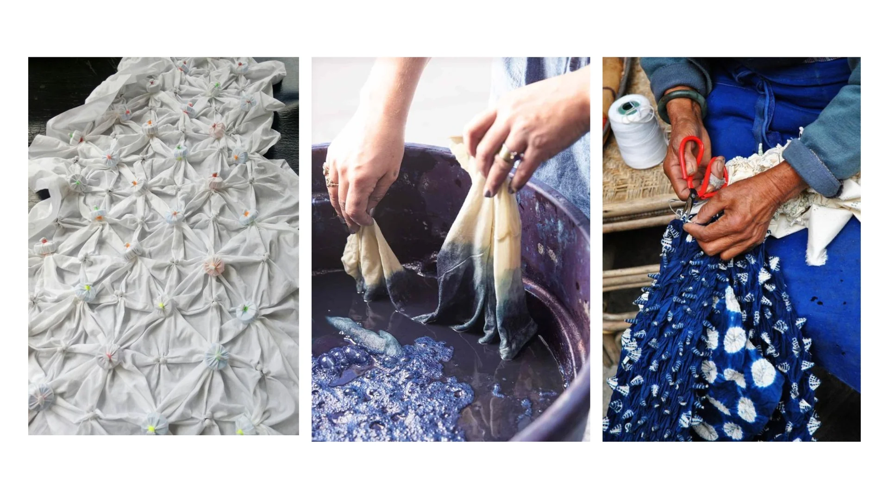

TIE AND DYE
Meaning of Tie and Dye
Tie and dye is a method of decorating cloth by tying parts of the fabric with thread or rubber and dipping it in dye. The tied areas do not absorb the dye, which creates beautiful patterns on the cloth when untied.

It is a popular method of textile decoration in Nigeria, especially among the Yoruba people where it is called "adire". Tie and dye is both traditional and creative, and it allows for unique designs every time.
Materials and Tools Used in Tie and Dye
- White cotton fabric – The main cloth used for tie and dye; it must be plain and 100% cotton so it can absorb dye well.
- Dye (colouring agent) – A substance used to give colour to the fabric; it is usually mixed with water and chemicals.
- Water – Used to mix dye, soak the cloth, and rinse the fabric after dyeing; it must be clean.
- Rubber bands or strong thread – Used to tie parts of the cloth tightly to create beautiful patterns by preventing dye from entering tied areas.
- Plastic bowls or buckets – Used to mix dye, soak cloth, or rinse it; they must be clean and large enough for the fabric.
- Wooden stick or spoon – Used for stirring the dye mixture to avoid touching chemicals with bare hands.
- Rubber gloves – Protect the hands from harmful chemicals and stains during dyeing.
- Salt or vinegar – Acts as a natural fixer to help lock the dye into the fabric and prevent fading.
- Caustic soda (sodium hydroxide) – A strong chemical that helps open the fabric fibres so the dye can penetrate and produce bright colours.
- Hydrosulphite (hydro) – A chemical used with caustic soda to activate the dye and keep it stable in the dye bath.
- Fixing agent (soda ash or sodium silicate) – Used after dyeing to fix the colour to the fabric and make it last longer.
- Urea – A chemical that helps keep the cloth moist during dyeing and makes the colour brighter and deeper.
- Measuring cup or bottle – Used to measure dye, water, or chemicals accurately to maintain colour consistency.
- Apron or old clothes – Worn to protect the body and clothing from dye stains during the dyeing process.
- Soap or detergent – Used to wash the dyed cloth after untying, to remove excess dye and improve the finish.
- Drying line or rope – Used to hang the dyed fabric in a shaded area to dry properly without fading the colour.
Steps in Making Tie and Dye
- Wash and dry the fabric to remove dirt and ensure smooth dyeing.
- Tie the fabric in different patterns using rubber bands or thread. The tied parts will resist the dye.
- Prepare the dye solution by mixing dye powder with hot water and salt. Stir it well.
- Dip the tied fabric inside the dye solution and leave it for some minutes to absorb the colour.
- Remove the fabric, squeeze out excess dye, and allow it to dry slightly.
- Untie the fabric carefully and rinse it in clean water until the water runs clear.
- Spread the cloth to dry completely under shade (not under the hot sun).
- Iron the dried cloth to make it neat and attractive.
Types of Tie and Dye Techniques
There are different ways to tie and fold the fabric. Each method gives a different pattern. Common types include:
- Marble (Knotting method) – The fabric is twisted into a ball and tied randomly.
- Stripes (Folding method) – The fabric is folded like a fan or accordion and tied at intervals.
- Circles (Coin or stone method) – Coins or stones are placed inside the fabric and tied tightly to form circular designs.
- Spiral – The cloth is twisted in a circle before tying, giving a spiral pattern.
- Pleating and Stitching – Pleats or small stitches are made before dyeing for detailed designs.
Importance of Tie and Dye
- It is a form of creative expression and traditional art.
- It is used to make attractive clothes and home items (e.g. curtains, pillowcases).
- It can be a source of income through local production and sales.
- It helps preserve cultural heritage, especially among the Yoruba people.
- It encourages skills acquisition for self-employment.
Care of Tie and Dye Materials and Tools
- Wash buckets and gloves after each use.
- Store dye in a safe place away from children.
- Avoid using hot water with bare hands — use gloves.
- Dry fabric in shade to preserve colour quality.
- Keep work area clean and avoid spills.
Examples of Tie and Dye Products
- Buba and wrapper.
- Scarves.
- Pillowcases.
- Bed sheets.
- Table cloth.
- Curtains
- Head ties (gele) .